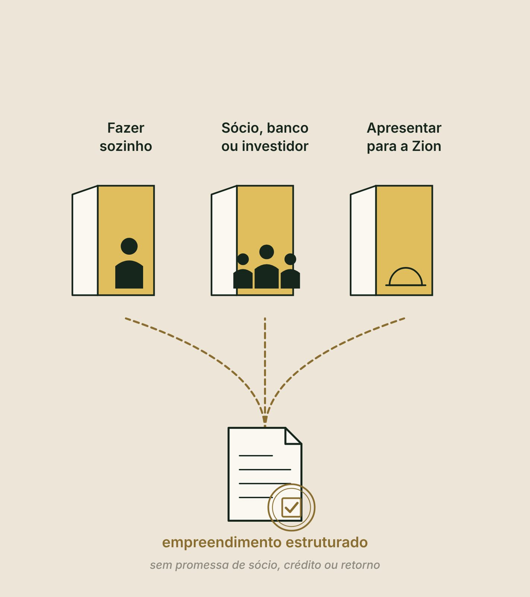

As três perguntas do capital, o número exato do pedido, as seis fontes, dinheiro ou sócio, e a decisão.
2
Por quê
O dinheiro muda de quem é o risco. Não muda a conta.
3
Resultado
A página 7, Capital e decisão, e o seu Dossiê de Desenvolvimento completo, com as sete páginas.
Revisite · sem voltar às páginas
Três perguntas do Pilar 6
Qual cenário precisa funcionar?
Clique para virar
Resposta
O conservador.
O que fica fora da folha de oito linhas, e dentro da conta?
Clique para virar
Resposta
O capital de giro. O terreno fica fora da conta, mas não é de graça.
Na Marina, em quanto tempo o dinheiro volta no conservador?
Clique para virar
Resposta
Pouco mais de seis anos, com a referência da Zion. Uma conta a trocar por cotação.
Bloco 1
De onde vem o capital, e com quem
CuriosidadeQuem tem dinheiro faz três perguntas antes de qualquer outra: quanto, para quê e quando.
ReflexãoSe o dinheiro aparecesse amanhã, o que você faria na primeira semana?
DicaEscreva agora o número que você pediria, e a quem, com a data. No fim, compare.
A cena que se repete
"Quanto você precisa?"
Num café com o gerente do banco, alguém pergunta com simpatia.
Sai um número redondo: "um milhão, mais ou menos".
"Para quê, exatamente, e quando?" Você tem o número da obra. Não tem o do pedido.
Antes da resposta · o que você acha?
Se alguém pusesse amanhã todo o dinheiro na mesa da Marina, o projeto dela estaria pronto?
O conservador dela volta em pouco mais de seis anos com a referência da Zion. Mas nenhuma linha tem cotação escrita, e a infraestrutura comum do terreno ainda não foi orçada.
Dinheiro de fora, antes e depois
O dinheiro muda de quem é o risco. Não muda a conta.
O dinheiro muda
O dinheiro não muda
De quem é o risco
Se a conta fecha no conservador
Quem decide junto com você
A diária que o produto sustenta
O que você deve, e a quem
O que o mercado compra
A velocidade da obra
O tempo de volta, se a operação não deixa margem
Terreno parado quase nunca é falta de dinheiro. É falta de ordem.
5 e 6 · Custo de buscar o dinheiro e o que ela põeem branco
Tudo pela referência da Zion, sem cotação e sem a infraestrutura comum do terreno, que só pode aumentar a conta.
Ao vivo · equalize o pedido
Exemplo ilustrativo · valores orientativos
O número exato, e não um redondo
1 · Oito linhas
2 · Terreno
3 · Giro
4 · Reserva
5 · Buscar o dinheiro
6 · O que você põe
O que falta de fora
Ajustado ao vivo
A última linha só tira o que existe
Contratado, não esperado
A promessa do parente, o carro que vai ser vendido, a herança que não saiu
Entram?
Não entram
São premissa: vão para a lista de riscos, com nome e data.
Marco verificável
O que é?
O que é
O que um terceiro confere com documento: licença emitida, medição assinada, fotos datadas. O dinheiro sai a cada marco.
Preciso de X para a fase um, assim distribuído, liberado em tantos marcos verificáveis.
Em linguagem de padaria · clique em cada uma
Cada dinheiro cobra um preço diferente
1 · Recurso próprio
Pede: nada
O que cobra?
Cobra
Toda a concentração do risco em você.
2 · Banco
Pede: garantia e uma operação que pague a parcela
O que cobra?
Cobra
Juro, carência curta e, às vezes, aval.
3 · Investidor
Pede: a tese e quem conduz
O que cobra?
Cobra
Uma parte do negócio e das decisões.
4 · Sócio
Pede: uma relação de longo prazo
O que cobra?
Cobra
Resultado, decisão, informação e saída.
5 · Pré-venda
Só no modelo de venda. Pede: projeto aprovado e estrutura legal
O que cobra?
Cobra
Uma obrigação com cara de caixa. Pré-venda não é receita.
6 · Parceria com quem opera
Pede: um contrato com papéis claros
O que cobra?
Cobra
Parte do resultado, pela operação.
1 · Recurso próprio · o mais rápido
A pergunta certa não é quanto você tem, é quanto você pode perder sem comprometer a sua vida.
Esse é o seu limite de perda. Escreve-se antes, em casa, com quem divide a vida com você.
Dinheiro da família, só com contrato escrito, como se fosse de um desconhecido: prazo, remuneração, atraso, e se o projeto não sair.
2 · O banco olha o fluxo e o ativo
Exemplo ilustrativo
O que a operação da Marina deixa no conservador, no anoR$ 108.766
Por mês, antes de qualquer parcela · ÷ 12cerca de R$ 9.064
"A garantia é o meu terreno"
O que quer dizer?
Garantia real
Um bem que responde pela dívida. Se der errado, o terreno responde. Você está disposto?
Aval pessoal
O que põe em risco?
Mais pesado
Sem aval, o pior é perder o que foi investido. Com aval, o pior cenário alcança a sua casa.
Compare pelo preço inteiro, e não só pela taxa
Todo dinheiro cobra cinco coisas
Juro
Em reais, e não em taxa.
Participação
A parte que você cede.
Garantia
O que responde se der errado.
Tempo
Os meses até o dinheiro estar na conta.
Liberdade
O que você deixa de decidir sozinho.
Em projeto pequeno e faseado, duas ou três fontes pequenas costumam ser mais viáveis do que uma grande.
Quiz relâmpago · 1 de 2
O investidor não cobra juro. Então ele é o dinheiro mais barato?
Juro zero não é dinheiro de graça. O barato cobra juros. O caro cobra participação. E o errado cobra o projeto inteiro.
Não confunda precisar de dinheiro com precisar de um sócio
O que te falta de verdade?
O que falta
A alternativa a estudar primeiro
Dinheiro para investir
Recurso próprio, financiamento ou investidor
Mão para uma tarefa específica
Contratar um profissional
Conhecimento especializado
Uma consultoria ou um profissional especializado
Acesso a um mercado
Uma parceria comercial
Gestão e decisões estratégicas
Talvez um sócio, com competências que você não tem
Expansão imobiliária grande
Incorporação, financiamento ou parceria estruturada
Os três são legítimos
Três sócios diferentes
1
O que traz dinheiro
Traz capital. Espera retorno conforme o combinado: empréstimo, participação ou outra estrutura.
2
O que opera
Traz gestão e execução no dia a dia. Espera participar das decisões e do resultado.
3
O que abre portas
Traz contatos, mercado e conhecimento que você não tem. Espera participação pelo valor que gera.
Terra, trabalho e conhecimento também valem como aporte. Não existe percentual universal.
Seis perguntas antes de dividir o negócio
Eu preciso de capital, ou de um parceiro?
Dá para contratar alguém para resolver isso?
Essa pessoa traz o que eu não tenho?
Queremos a mesma coisa, no mesmo prazo?
Quem decide o quê está escrito?
O que ela traz vale a parte que eu entrego?
O sócio leva quatro coisas que não se desfazem sem comprar de volta: resultado, decisão, informação e saída.
Escolha o sócio pela década, não pelo cheque.
Quiz relâmpago · 2 de 2
Um amigo oferece cuidar das redes sociais do projeto em troca de 20% do negócio. O que perguntar primeiro?
Uma tarefa específica quase sempre se resolve contratando. Sociedade é para quem traz o que você não tem e não consegue contratar, e por muitos anos.
Ao vivo · conta para ver o tamanho
Exemplo ilustrativo · não é proposta
Se a Marina buscasse tudo de fora, hoje
Ajustado ao vivo
O que falta de fora
Um investidor só: a parte de quem pusesse o dinheiro
A parte da Marina, com o terreno dentro
Várias pessoas: o que falta ÷ a cota
Pessoas, cada uma com contrato
Exemplo ilustrativo
O que falta à Marina, de verdade
DinheiroSim, para a fase um
Quem operaNão falta: uma pessoa local
ConhecimentoUm pouco, na obra: arquiteto e engenheiro, contratados
MercadoNão falta: o produto está escrito
Gestão e decisãoNão falta: ela quer decidir
A decisãoEla procura dinheiro, não sócio
Antes do bloco 2 · 5 minutos
O seu capital no papel
1Responda as três perguntas, com o documento de cada sim.
2Escreva quanto você pode perder sem comprometer a sua vida.
3Marque cada uma das seis fontes: disponível, possível ou fora.
4Anote o que te falta de verdade, e se isso pede um sócio.
5:00
Compare com o palpite que você escreveu no começo.
Bloco 2
O Dossiê e a decisão
CuriosidadeUma decisão bem tomada e não registrada, seis meses depois, parece decisão por impulso.
ReflexãoQual página do seu Dossiê ainda está só na sua cabeça?
DicaLeia a coluna "depende de" de cima para baixo. O que se repete é a sua maior lacuna.
O Dossiê de Desenvolvimento
Sete páginas, uma pasta
Página
O que responde
1 · Ficha do Território
O que o terreno permite
2 · Ficha do Mercado
Quem paga, quanto e quando, e quantas unidades cabem
3 · Ficha do Produto
O que você vende, e para quem
4 · Modelo de Negócio
Renda, venda ou híbrido, a conta do cem por cento e quem opera
5 · Masterplan faseado
O terreno inteiro no tempo, e a fase um
6 · Pré-viabilidade
Quanto custa, quanto sobra, os cenários e o tempo de volta
7 · Capital e decisão
De onde vem o dinheiro, com quem, e a decisão
A diferença não está na apresentação
Bonito ou defensável?
Um Dossiê bonito
Convence quem?
Convence
Quem já quer acreditar.
Um Dossiê defensável
Aguenta o quê?
Aguenta
A pergunta de quem não tem interesse nenhum em acreditar: o banco, o investidor, o sócio desconfiado. E você, daqui a seis meses.
O que não foi escrito não existe na hora da pergunta.
Uma página está pronta quando responde às quatro
As quatro perguntas de cada página
Clique em cada pergunta: o que conta como resposta, e por quê.
Exemplo ilustrativo · o Dossiê da Marina lado a lado
Página
Veredito
Depende de
1 · Território
Testa
Uma diária acima da média da região
2 · Mercado
Ajusta: abre com 3, desenha para 5
Entregar o que o topo da faixa entrega
3 · Produto
Avança, com o preço em teste
A hipótese de cerca de R$ 716, a testar
4 · Modelo de negócio
Avança: renda, no degrau fácil
O cenário mais fraco pagar os custos
5 · Masterplan faseado
Avança
Os índices da prefeitura e o mapa ambiental
6 · Pré-viabilidade
Avança: pouco mais de seis anos
As cotações e a infraestrutura comum caberem em cerca de R$ 870 mil
7 · Capital e decisão
A decidir hoje
As cotações e o limite de perda
Leia a última coluna de cima para baixo. O que se repete?
O achado do Dossiê completo
R$ 645
A conta inteira se apoia na diária que a Marina mediu no mercado. Com ela, o cenário mais fraco fecha.
A hipótese do produto, cerca de R$ 716, vira folga, não condição. O que a pasta ainda não tem é o custo cotado.
Três regras de leitura
O projeto anda na velocidade da página mais fraca
Num projeto qualquer, seis páginas avançam e uma diz parar. O que ele faz?
Não é votação. Seis páginas boas não compram a que manda parar. Entre dois critérios, fique com o mais exigente, com a razão escrita: na Marina, R$ 645, e não a hipótese de R$ 716.
A decisão do projeto, escrita
Avançar, ajustar ou parar
Clique em cada palavra: quando, e por quê.
Exemplo ilustrativo · resolvido passo a passo
A decisão da Marina
Investimento da fase um, com o giro, pela referência da ZionR$ 690.529
Critério: 8 anos × R$ 108.766 no conservadorR$ 870.131
Avançar · folga para cotações e infraestrutura comumcerca de R$ 180 mil
O meu projeto está pronto para o próximo passo, e eu sei qual é: trocar a referência por cotação. Se o custo cotado passar de cerca de R$ 870 mil, eu volto à conta antes de assinar.
A decisão vira plano · cada fase tem um verbo
Os próximos 90 dias
Clique em cada fase: o que entra, e o que a Marina faz.
Uma regra vale para todo mundo: o cronograma da obra só depois das verificações técnicas e legais.
Com o Dossiê na mão · o caminho segue a decisão
Três caminhos. Nenhum é melhor por definição.
Clique em cada caminho: quem lê primeiro, e por quê.
As páginas são as mesmas
O que cada mesa lê primeiro
Mesa
Lê primeiro
Você e a família
O limite de perda e o conservador
O sócio ou o grupo
O contrato e as regras de convivência
O banco
A garantia, e se a operação paga a parcela
O investidor
A tese e quem conduz
Quem desenvolve faz a conferência antes, a due diligence, e chega com a pasta pronta: o que tem, com data, e o que falta, com quem resolve.

Ao vivo · o capital e a decisão em uma tela
Exemplo ilustrativo · não é proposta
Ajustado ao vivo
Investimento da fase, com o giro
Critério: 8 anos do conservador
Folga para as cotações
O pedido: o que falta de fora
Fluxo do mês, antes de parcela
A R$ 50 mil por pessoa
Um investidor só, com o terreno como aporte
Revisão · responda de cabeça
Duas das três perguntas do capital são sim e uma é não. O que falta?
Um não basta. Não falta capital: falta a decisão anterior a ele.
Revisão · responda de cabeça
Um terreno entrou na lista do Land Bank Zion. O que isso garante?
A lista reúne terrenos com o Dossiê feito. Estar nela quer dizer que o projeto pode ser olhado, não que será escolhido, financiado ou vendido.
Faça agora · a página 7 e o Dossiê completo
O seu Dossiê de Desenvolvimento
1Responda. Uma pergunta por tela: as três do capital, o limite de perda, as fontes, o que falta, a decisão e o caminho. "Não sei" vira tarefa da semana.
2Leia o retorno do mentor de IA da Zion sobre as suas respostas.
3Baixe o PDF com as sete páginas. Não feche o curso sem o Dossiê na mão.
10:00
Na área de membros: aula "Faça agora · O seu Dossiê de Desenvolvimento"
O Pilar 7 em uma tela
O que ficou
Terreno parado quase nunca é falta de dinheiro. É falta de ordem.
Três perguntas de sim ou não vêm antes do dinheiro. O pedido é um número exato.
Seis fontes, seis preços. Recurso próprio se mede pelo limite de perda.
Não confunda precisar de dinheiro com precisar de um sócio. Escolha pela década.
Sete páginas, quatro perguntas cada. O projeto anda na velocidade da mais fraca.
Avançar, ajustar ou parar, com o critério que mudaria a decisão. Parar não é fracasso.
Transforme Seu Terreno em um Projeto de Hospedagem de Sucesso
Você começou com um terreno e uma dúvida. Termina com sete páginas e uma decisão.
Se a sua decisão é ajustar ou parar, o próximo passo é a sua maior lacuna. Com o Dossiê pronto: sozinho, banco ou investidor, ou uma conversa com a Zion. A Zion avalia cada caso.
Conteúdo educacional. A Marina é um exemplo ilustrativo e as contas são ilustrativas, na base de referência da Zion. Não é oferta de investimento nem recomendação de financiamento, sociedade ou fonte de capital, e não é promessa de renda, retorno, ocupação, crédito, investidor, sócio, venda ou entrada no Land Bank Zion. Garantias, aval, sociedade, contratos e impostos: quem confirma no seu caso é o advogado, o contador e o banco.